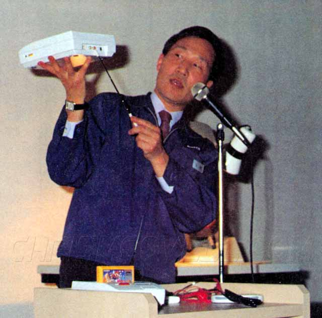
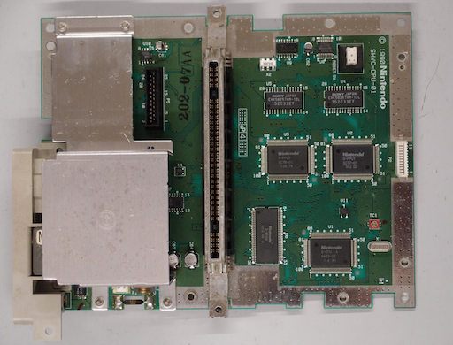
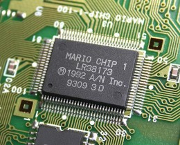
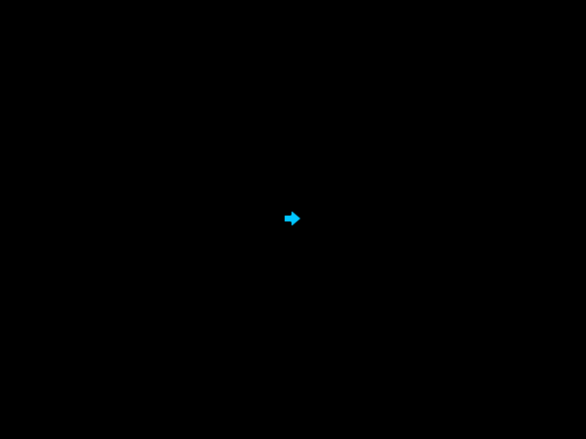

Super Nintendo
スーパーファミコン
Development
History
Super Nintendo released in 1992 in Europe
Hardware

- 3 'processing units'
- Central Processing Unit
- Audio Processing Unit
- Picture Processing Unit
- 128KB RAM
- Memory-mapped I/O
- V/H-Blank interrupts
- DMA
S-CPU
S-CPU
- Registers
- 3 general-purpose (A, X & Y)
- 1 status
- 2 addressing (D 0-offset and DB bank)
- Stack pointer (S)
- Program counter (PC)
- 8- or 16-bit registers
- 24-bit address space
- 6502 emulation mode
Max 3.58 MHz- Multiplication and division
S-APU
Musical scores
S-PPU

240p @ 60FPS
32K colors
16 palettes × 16 colors
4 background layers
128 sprites (64 × 64)
1 palette per sprite
Enhancements
Installed on cartridge
Tools
Alternatives
Programming
Skills and concepts
- 65816 assembly language
- Memory-mapped I/O
- Read/write ports and DMA
- V-Blank interrupt
Assembly
Opcodes and operands
01 clc ; Clear the CPU carry flag
02 xce ; Switch to 65816 native mode
03 .DEFINE CGDATA $2122 ; Use directive to define a named value
04 lda #$FF ; Load the accumulator with the value 0xFF
05 sta CGDATA ; Store the accumulator value in address $2121
Assembly 2
Control flow
01 ; Wait for joypad auto-read
02 - lda HVBJOY
03 bit #HVBJOY_JOYREADY
04 bne -
05 rep #$20 ; Reset accumulator to 16-bit
06 lda JOY1 ; Get joypad input
07 bit #JOY_UP ; Check if up was pressed on the D-pad
08 bne Up
09 bit #JOY_DOWN ; Check if down was pressed on the D-pad
10 bne Down
Ports
Write color data to (CGRAM) 'through' a port
01 ; Set color 1 of palette 8 to white
02 lda #$81 ; Load destination address
03 sta CGADD ; Set destination address (CGRAM)
04 lda #$FF ; Load value (L)
05 sta CGDATA ; Write value to port (CGRAM)
06 lda #$7F ; Load value (H)
07 sta CGDATA ; Write value to port (CGRAM)
08 ; Next color...
09 lda #$82 ; Load destination address
10 sta CGADD ; Set destination address (CGRAM)
Ports 2
Write pixel data to (VRAM) 'through' a port
01 lda #VMAINC_INC_H ; Increment after writing VMDATAH
02 sta VMAINC ; Set VRAM increment mode
03 ldx #$0400 ; Load destination address
04 stx VMADD ; Set destination address (VRAM)
05 lda #%00000100 ; Load value (L)
06 sta VMDATAL ; Write value to port (VRAM)
07 lda #%01110100 ; Load value (H)
08 sta VMDATAH ; Write value to port (VRAM)
09 lda #%00000111
10 sta VMDATAL ; Address was incremented automatically to #$0401
11 lda #%00000100
12 sta VMDATAH
DMA
Transfer data between cartridge and VRAM
01 lda #%00000000 ; From A-bus to B-bus, read consecutive addresses
02 sta DMAP0 ; Set DMA control
03 lda #(CGDATA - BBUS_OFFSET)
04 sta BBAD0 ; Set DMA destination (8-bit B-bus is A-bus - $2100)
05 lda #Color ; Address of the defined bytes at the Color label
06 sta A1T0 ; Set DMA source (A-bus)
07 lda #:Color ; Get the bank of some defined bytes at the Color label
08 sta A1B0 ; Set the bank to use during DMA
09 lda #$02
10 sta DAS0L ; Set DMA transfer size (number of bytes)
11 stz DAS0H
12 stz CGADD ; Set starting address
13 lda #$01
14 sta MDMAEN ; Initialize DMA transfer
V-Blank interrupt
Callback every field/frame
01 .SNESNATIVEVECTOR ; WLA-DX directives
02 NMI VBlank
03 .ENDNATIVEVECTOR
04 ; Enable V-Blank
05 lda #NMITIMEN_NMI_ENABLE
06 sta NMITIMEN
07 - wai
08 jmp - ; Infinite loop
09 VBlank:
10 ; Callback code goes here...
Tiles
- Used for backgrounds and sprites
- Stored in VRAM as 'characters'
- 8 by 8 planar bitmaps
Planar bitmaps
- 2, 4 or 8 planes (layers)
- 1 or 0 in each plane is combined
- Value determines color
Plane A
0 | 1 Plane B
- + - 1 | 1 Result
1 | 0 - + - 1 | 2
0 | 0 - + -
1 | 0
Sprites
Metadata for each sprite is stored in a table
- X-coordinate
- Y-coordinate
- Character number (VRAM)
- Palette number
- Priority (Z-ordering)
- Horizontal/vertical flip
- Size
Backgrounds
Depends on background mode
Consist of tilemaps of 32 by 32 tiles
- Character number (VRAM)
- Palette number
- Priority (Z-ordering)
- Horizontal/vertical flip
Code + demo?
Links
- Examples
- Documentation
- WLA-DX assembler
- Higan (emulator)
- OpenEMU (emulator host)